Géczy Gábor írása
(1.rész)
A teremtés alaptörvénye, hogy minden teremtmény vissza akar térni a forrásához, teremtőjéhez. Ez tartja össze a Világegyetemet (gravitáció), ezért tér vissza hozzánk minden gondolatunk és cselekedetünk (karma), ezért keresi mindenki ösztönösen az Istent…
Teljesség
Az esőcseppek a tengerből emelkednek fel, és útjuk végén oda térnek vissza. A földre hulló esőcseppnek önmagában nincs esélye arra, hogy a sok ezer kilométeres utat megtegye, ezért összefolyik a többi cseppel. Az esőcseppek erekké szerveződnek, az erek patakokká duzzadnak, a patakok folyóvá terebélyesednek, így együtt végül elérik a tengert.
Minden, ami élő, ezt az önszerveződési formát, a fa mintázatot használja. Így működnek az ereink, a tüdőnk, a fák, a folyók, minden, ami él. Az egymásba ágyazódó alakzatok minden szinten önhasonlók, felépítésüket, működésüket ugyanaz a minta irányítja.
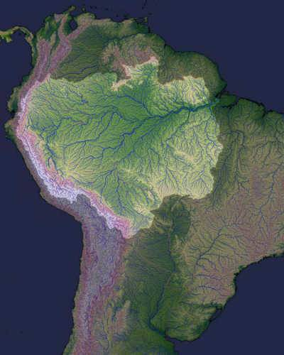
A teremtés alaptörvénye: vissza a forráshoz, a tenger minden cseppje visszavágyik valódi otthonába. Az Amazonas: erek, patakok, folyók, folyam...
A szerves közösségek is e minta alapján fognak össze önszerveződő, önvezérelt közösségek hierarchikus rendszerévé. A közös cél (vissza a Forráshoz), és a közös ritmus (a közösséget éltető rítusok) szervezi össze és tartja egyben őket. Addig él egy közösség, amíg közös az ég, amíg a célok és rítusok ugyanazt jelentik a közösség minden tagja számára.
Kiesés
Önökben is felmerül a kérdés: miért estek mára szét az évezredekig jól működő közösségek? Hová lettek a vármegyék, a járások, a faluközösségek, a családok? A szétesésnek látszólag külső okai vannak: egy szűk csoport a közösségek minden szintjéről magához vonta az irányítást. Az égigérő fa különböző szintjeiről az egyéntől, a családoktól (falvaktól, járásoktól, megyéktől, országoktól) ellopott önrendelkezési jogból hatalmas, átláthatatlan, kusza piramis épült: a globális világhatalom.
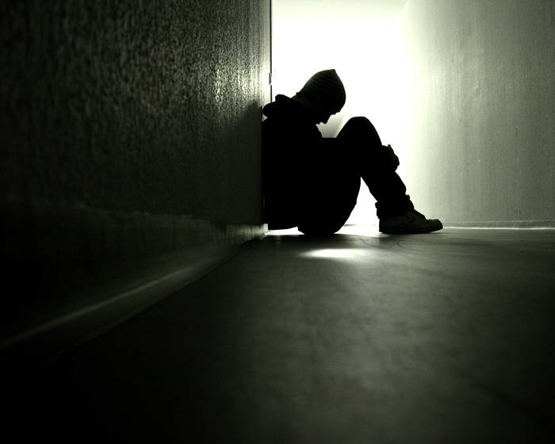
Fogyasztói társadalmunk jelképe, a magány. A teljességből kiesett, beton embertárolókban élő agymosott rabszolgák életéből épül a piramis…
A konfliktus, amit régen egy atyai pofon helyi szinten megoldott, az most Brüsszelig fut egy lélektelen gépezetben. Eltüntették a járásokat, a helyi önkormányzatokat segélykifizető fiókokká aljasították, a „választópolgár” lassan már csak a kocsija színét választhatja meg szabadon. A globalizáció mérge rövidesen szétmarja az utolsó védvonalat, az országhatárokat, és létrejön a totális terror: a fogyasztói társadalom.
A folyamat gyanúsan emlékeztet a betegségre. A közösségek sérülése nyomon követhető az őt éltető táj sérülésein. A rákos gócként működő városok vas és beton csápjai, a vasútvonalak és az autópályák egyre mélyebbre hatolnak a még egészséges tájba. Mindent elszívnak, ami élő, ami táplál, legyen az élelmiszer, energia, ember, és csak a mérget juttatják vissza. A szemetet, a manipulált élelmiszert, a Heti Hetest…
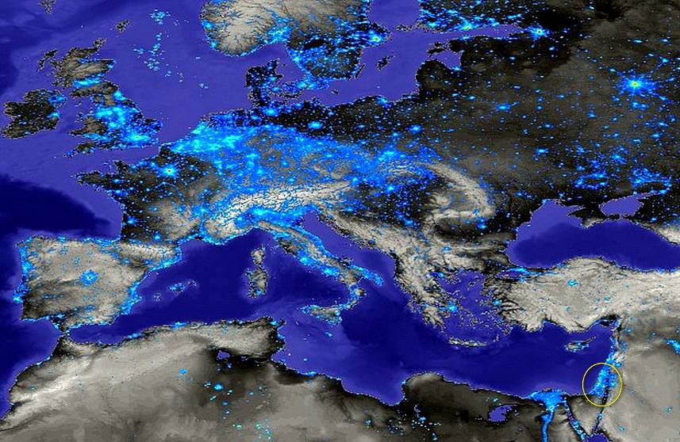
A betegség gócai Európában. A nagyvárosok úgy működnek, mint a rák: elszívják az életet, és csak a mérgeket juttatják vissza a tájba…
Minden belül van, a betegséget sem külső okok hívják létre. Az egész-ség belül bomlik meg, a szellem és a lélek görcsei miatt elvékonyodó életerő következtében. A régi közösségek szétesését sem szabad külső okokra fogni. A valódi ok az volt, hogy közösségeinkbe beférkőzött a hazugság és a közöny.
Valahogy úgy történt, mint a „Császár új ruhája” mesében, ahol az idegenből jött hazug takácsok ellopták az összes aranyfonalat. És mi asszisztáltunk hozzá! Mindenki dicsérte a császár új ruháját, magasztalta a mindenkori EU szakértők nem létező munkáját… Ki érdekből hazudott, ki közönyből hallgatott, de mindenki részese volt a Nagy Csalásnak.
Hazatalálás
Csak az ártatlan gyermek, aki még képtelen hazudni, merte kimondani: meztelen a császár! Csak a szabad akarattal rendelkező emberek képesek újraépíteni világunkat, akiknek az agyát még nem mosta szét a kötelező „életfogytig tartó oktatás”. Akiknek a fekete még fekete, a fehér fehér, akik még józan paraszti ésszel gondolkodnak, nemüket a Teremtőtől kapják, nem maguk választják… Csak a szabad és nemes emberekre lehet számítani akik NEMet mernek mondani a hazugságra, a közönyre, a mai beteg világra!
Az esőcseppeket egyetlen közös cél mozgatja: vissza akarnak térni a forráshoz, a többi körülményt az esőcsepp szabad akarattal maga dönti el. A jövő közösségeiben is újra fel kell lobbanjon az őszinte, közös vágy: vissza a Forráshoz. Fontos, hogy a közösségek minél teljesebb önállóságra és önellátásra törekedjenek, hogy a gondviselés rendje helyett ne mesterségesen kialakított politikai, gazdasági, és társadalmi kényszerek befolyásolják létüket és működésüket!
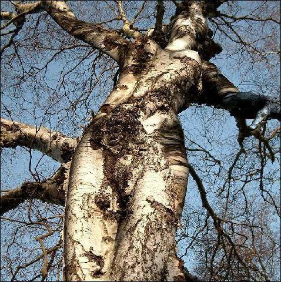
Az ember az Eget a Földdel összekötő kozmikus lény – csak néha elfelejtjük, miért is jöttünk…
Melyek a legfontosabb erkölcsi elvek, melyek a jövő közösségeit működtetik?
1. A kör közepe a Jóistené A tételes vallások, az ezoterikus tanok, a politika a mestereket, vezetőket állítja központba, akik azonnal körbe veszik magukat bólogató hívekkel. Ha a közösség középpontjában a mester áll, nem jut hely az Istennek. Az új kor közösségeinek maguknak kell az Istent megidézniük, nincs közvetítő. Ha nincs közvetítő, nem torzulhat a mindig és mindenkire sugárzó forrás jele. A pap, a táltos, a mester, a közösség vezetője – ha jól végzi dolgát - csak segítő, aki a kiesetteket vezeti vissza a kozmikus rendbe, az Egész-ségbe. Példáját, tanítását hiteles életével kell szentesítenie.
2. Mindenki a másikért él Ma mindenki a másikból él, annak rovására gazdagszik, ezt nevezzük „fejlődésnek”. Ezt a torz versenyszellemet már gyermekeinkbe belekódoljuk. A természetben nincs verseny, együttműködő rendszerek vannak. A rókák és a nyulak együtt állítják be az egyensúlyt, ha bármelyik „győz”, a másik is elpusztul. A szkíta kultúrákban a legfontosabb minta a Hunor-Magyar, az egymást segítő, támogató, egymás hátát védő testvérpár. Egy ilyen alapon működő közösség, vagy nemzet legyőzhetetlen!
3. A közösség nem börtön, közös-ég Egy közösséget a közös céloknak és a közös ritmusnak kell egyben tartania. Ha a közösség mesterségesen bezárkózik, elpusztul. A termodinamika főtétele: a zárt rendszer entrópiája növekszik, azaz a zárt rendszerek a káosz felé törekednek. Nem szabad a közösséget bezárni, belterjessé tenni, mert elkorcsosul (ld. állat- és növénytenyésztés). Állandó kölcsönhatást kell fenntartani a külvilággal, ez biztosítja a folyamatos tapasztalást, a változást, amely maga az élet.
4. Erkölcs alapú földhasználat Ma kizsigereljük a természetet, agyonmérgezzük Földanyánkat megfoghatatlan „gazdasági okok”-ra hivatkozva. Az ártéri gazdálkodás során a halakat a fokokon lehalászva több hal maradt a folyóban, mintha nem halásztak volna. A hagyományos tájhasználat lényege, hogy az ember úgy avatkozik a Teremtésbe, hogy általa gazdagodik a táj, nő az élet sokszínűsége. Az ember csak azt a többletet veheti el a természettől, ami az ő munkája által keletkezett. Ezért káros a fogyasztói társadalom!
5. Az élet él, és élni akar… Világegyetemünk él. Itt minden az életből fakad, mindent az élet működtet, és mindennek az élet a célja. Ami nem ebből fakad, amit nem ez működtet, aminek nem ez a célja, az életképtelen, legyen az egyén, legyen az közösség, legyen az tudomány, művészet vagy vallás!
(2.rész)
Világegyetemünk él. Itt minden az életből fakad, mindent az élet működtet, és mindennek az élet a célja. Ami nem ebből fakad, amit nem ez működtet, aminek nem ez a célja, az életképtelen, legyen az egyén vagy közösség, legyen az tudomány, művészet vagy vallás!
Hogyan távolodott el civilizációnk ennyire az élettől? Miért akarjuk leigázni a folyókat, miért vágjuk ki az erdőket, miért pusztítunk el mindent, ami él? Miért érezzük rosszul magunkat a természetben, miért vágunk el minden köteléket Földanyánkkal? Miért viselkedünk úgy, mint elefánt a porcelánboltban? Mi változott meg bennünk?
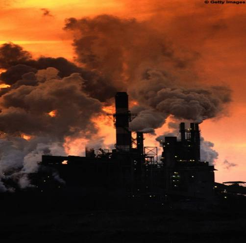
„Szemeidet fel ne emeld az égre…”
Minden atyától elvárható, hogy tudását, tapasztalását átadja gyermekeinek, hiszen bennük folytatódik az Élet, ők az örökösök. Teremtőnk is életünk minden pillanatában tanítana minket – ha odafigyelnénk. A bennünket körülölelő természet mintaként áll előttünk: én így teremtek, tanulj belőle, teremts, tapasztalj, nőj fel Atyádhoz!
Évezredek teltek úgy el, hogy az emberiség nagy része ezt a tükröt használva épült-szépült, nemesedett. Generációk százai tapasztalták ki és adták tovább egymásnak a teremtés csínját-bínját, az emberlét szabályait. Vajon miért homályosult el ez a tükör, hogy jelent meg az emberekben a mindent elborító hazugság és közöny?
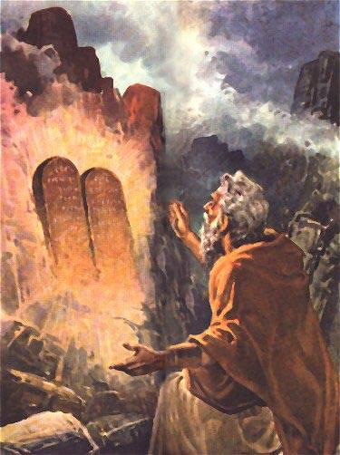
Az igazság létezik, a hazugságot kitalálják. Az igazság a megtörtént eseményekben, megélt tapasztalatokban él. Ha nem nézünk tükörbe, nem látjuk, hogy áll a hajunk. Ha elzárjuk magunkat a mintákkal tanító, tetteinket visszatükröző természettől, csak kitalációkra épülő, a valós élettől távoli „tudásokat” szerezhetünk. Mivel - tapasztalások híján - már az alapok is hibásak, jelenlegi tudásunk nagy része életidegen, azaz hazug.
Az igazságot megtámadó vírus a városi létben keresendő. A városok úgy jöttek létre, hogy az emberek falakat építettek a természet és önmaguk közé. Kizárták a természetet, elfedték a mintákat, letakarták a tükröt. Már nem tudtak erőt és hitet meríteni a napfelkeltéből, nem érezték a Hold ritmusát, nem olvastak a csillagokban. Elveszett a forrás, elhalt a ritmus.
A vírus nem élőlény, hanem egy hibás minta, amely arra készteti az élőket, hogy ne önmagukat gyarapítsák, hanem a hibás mintát másolják és sokszorozzák. A vírus azt mondja, hogy építs falakat magad és a Teremtő közé, ne engedd magadhoz a többi embert, ne lásd a fényeket… Ahogy az Ószövetség fogalmazza:
„Se szemeidet fel ne emeld az égre, hogy meglásd a napot, a holdat és a csillagokat, az égnek minden seregét, hogy meg ne tántorodjál, és le ne borulj azok előtt, és ne tiszteljed azokat, a melyeket az Úr, a te Istened minden néppel közlött, az egész ég alatt.” (Móz 4, 19)
„Emeld fel fejedet büszke nép!”
De az Ószövetség nem a mi hagyatékunk. Népünk lényege az élet tisztelete, a szabadság szeretete, az állat- és növényvilág megbecsülése. A magyar ember – a multik nagy bánatára – még ma is nehezen költözik, mert gyökere mélyen kapaszkodik az őt szülő és éltető tájba. Számos mesénk, dalunk szerelmes himnusz a teremtett világról: „Napot is szeretem, Holdat is szeretem, de fényes csillagot leginkább szeretem…”
Népünk küldetése, vállalása (vallása) népmeséinkben rejtezik, melyeket valaha felnőttek meséltek felnőtteknek. Ezek a mesék – Jézushoz hasonlóan – példabeszédekben tanítanak. A népmeséből (napi miséből) mindenki annyit ért meg és épít életébe, amennyit lelke befogadni képes. Meséinkből őseink tapasztalata és tudása árad, amely térképként segíti a földön járó utódokat a hazatalálásban. Ez népünk Ószövetsége.
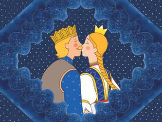
Ezek a mesék rólunk, a mi életünkről szólnak. Mi vagyunk az Atyától elinduló királyfiak, és mi vagyunk a fogságból szabadulást váró királylányok. Bennünk él a sárkány, amellyel meg kell küzdenünk, és nekünk kell átkelni az Óperenciás tengeren. Miattunk sír az öreg (Örök) király egyik szeme, és rajtunk gyönyörködve nevet a másik. A bennünk élő Táltost kell parázzsal megetetni, ha el akarunk jutni a csillagokba!
És nem szabad megijedni attól, hogy a Táltos most a szemétdombon hever. Hogy a lovat, melynek hivatása, hogy minket vigyen, most nekünk kell a vállunkra venni. És nem adhatjuk fel, ha kinevetnek, ha nem értenek meg minket... A mi feladatunk csak annyi, hogy a Táltos lovat, a valódi tudás hordozóját válasszuk, és bizalommal nézzünk a csillagokba! „Mert most tükör által homályosan látunk, akkor pedig színről-színre; most rész szerint van bennem az ismeret, akkor pedig úgy ismerek majd, a mint én is megismertettem.” (Kor 13,12)
A legkisebb királyfi
Mire tanítanak meséink? Elindul Otthonról a három királyfi. A legidősebb az aranyszőrű paripát választja útitársként, ami gyors és komfortos. Neki űrsiklói lesznek, és gyarmatai. A középső az ezüstszőrűt, így neki is jut egy-két nemzeti multi. A legkisebb a Táltos csikót választja, aki a szemétdombon hever. De eljön a próbatétel, és ez a próba nem fizikai! Nem a hegyeket kell odébb vinni, nem a Holdra kell szállni: meg kell etetni az egeret.
Az egeret, amely a legszürkébb, a legvédtelenebb, a legkisebb. Népmeséink tanulsága szerint az idősebb királyfiak vesztét az okozza, hogy nem hallgatnak a lelkükre. Büntetésből és tanulságként a gonosz boszorkány kővé változtatja őket. Kővé válik minden körülöttük, kőben laknak, kőolajat esznek, még fejfáik is sírkővé válnak. Eltávolodnak az élettől, falakkal veszik körbe magukat, már nem teremtői, csak fogyasztói bezárult világuknak.
Közben a legkisebb királyfi egyre csak vacillál: megéri nekem nyakamba venni a csikót? Nem lenne jobb csokit zabálva a plazmatévét bámulni? Nem ciki a változás? Nem fognak kiröhögni a többiek? Vajon nem sérti szomszédim érzékenységét? De a csikó egyre csak könyörög: „Édes gazdám, vigyél ki a városból! A végtelen mezőkön akarok száguldani, érezni, szeretni, élni! Mert én Te vagyok, a hallhatatlan lélek! Ne hagyj a szemétdombon!”
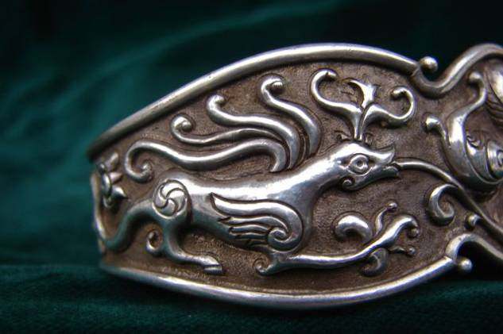
És az már a Jövő: a királyfi vállára veszi (vállalja) a Táltos csikót, elhagyja a várost (vírust), és a lelkében parázsló tüzet felszítva újra éleszti a Táltost. Megeteti az egeret, ezért elnyeri a méltó jutalmát: a király felajánlja neki a fele királyságot. De itt megszólal benne az új parancs, nemzete vállalása (vallása) és dönt: „Köszönöm uram, királyom, de amíg a kővé vált testvéreimet ki nem szabadítom, nem mehetek haza…”
Ez a parancs hozott bennünket a Földre, ez létezésünk végső oka hagyatékunk szerint. Ezért ne dőljünk be az önmegvalósítás bódító maszlagának, a „nekem ez már az utolsó reinkarnációm” típusú csacska szövegeknek. Higgyünk az Istenbe, bízzunk magunkban, magyarságunkban (magerőnkben) és ne felejtsük el időnként megetetni a Táltos csikót.
„Emeld fel fejedet büszke nép,
Viselted a világ szégyenét
Emelkedj magasba, kis haza
Te, az elnyomatás iszonya
Emeld föl szívedet, nemzetem,
Lángoljon a világegyetem!”
(Juhász Ferenc: Himnusztöredék)
(3.rész)
Az igazság létezik, a hazugságot kitalálják. Az igazság a megtörtént eseményekben, megélt tapasztalatokban él. Ha nem nézünk tükörbe, nem látjuk, hogy áll a hajunk. Ha elzárjuk magunkat a mintákkal tanító, tetteinket visszatükröző természettől, csak kitalációkra épülő, a valós élettől távoli „tudásokat” szerezhetünk. Mivel - tapasztalások híján - már az alapok is hibásak, jelenlegi tudásunk nagy része életidegen, azaz hazug.
Irányok
Anyanyelvünk egyik rendkívüli tulajdonsága, hogy működik benne a Doppler-effektus (egy forrás felé közeledve a forrás rezgése növekszik, távolodva csökken). Nyelvünkben a közeledést magas hangrendű szavakkal fejezem ki (ez, ide, erre …), a távolodást mély hangrendűvel (az, oda, arra …). Estünkben ez azért fontos, mert eldönt egy régóta folyó teológiai vitát: Isten és Sátán viszonyát.
A teremtő erőt nyelvünkben az STN mássalhangzókkal jelöljük. A semleges forrásnak én magam adok töltést: ha közeledek hozzá, Istent érzem, ha távolodok tőle, Sátánnak látom. Isten és Sátán irányok! Azt, hogy mi történik velem az életben, kizárólag a döntésemen múlik. A forrás törvénye alapján minden történést valaha én indítottam el, mert minden teremtményem (tettem, érzelmem, gondolatom) visszatér hozzám.
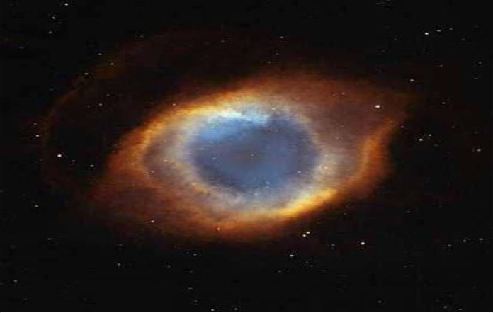
Az Isten Szeme csillagköd
Az Újszövetségben Jézus elmondja, hogy lehet megállítani a mókuskereket: „Ha megdobnak kővel, dobd vissza kenyérrel!”. Azt a követ valaha én indítottam el, most rajtam csattan. Innentől kezemben a döntés: visszadobom, és új kört indítok („szemet szemért, fogat fogért”), vagy kiszállok. De nem elég a rosszat megállítani, a jóért tenni is kell! Ha kenyeret akarok kapni, adnom is kell! Tulajdonképpen egyetlen szabad akaratom van a Földön: melyik irányba menjek? Közeledjek Istenhez, vagy távolodjak tőle?
A forrástól (azaz az élettől) távolodva egyre kevesebb a fény, egyre érthetetlenebbé válik minden. Csökken a központ ereje, a maradék energiákat egyre bonyolultabb rendszerekkel kell megosztani, melyeket a félelem, a hazugság, és a bosszú irányít.
A teremtett világ érthetetlené válik, egyre kevésbé tudok hatni rá, csökken a szabadságom. Egyre kevésbé változom, lelassulva élek, végezetül kővé válok.
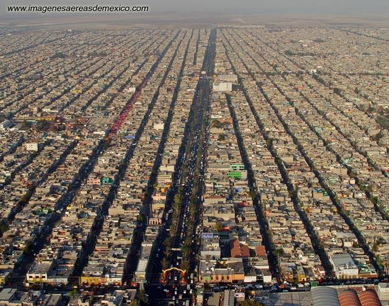
Megapolisz, egy kővé vált világ.
A forráshoz (az élethez) közeledve egyre több a fény, minden egyszerűvé válik. Nő a forrás ereje, egyre több teremtő erőhöz jutok, nem szorulok másokra. A teremtés törvényeit megértve és felhasználva egyre nő a szabadságom, ezzel részem a Teremtésben. A forrás felé nem kell a hogyanokkal bajlódnom, a felgyorsuló változások egyre újabb, előre nem kiszámítható lehetőségeket nyitnak, körém simul a világ.
Arányok Iránytűként egyetlen jelzést kaptunk Teremtőnktől, ez a boldogság. Az ember három világban él egyszerre (test, lélek, szellem), ha e három síkban egyszerre, azonos irányban haladunk, ezt éljük meg harmóniaként. Ha a gondolataim, érzelmeim, tetteim nem ugyanazt szolgálják, megjelenik a félelem és a hazugság: boldogtalanná válok. Akkor tudok csak haladni, ha a három ló egy irányba húzza a szekeret.
Az arányok megtalálásában a hagyományok sok segítséget nyújtanak. Nemcsak abban, hogy mit tegyek, abban is, hogy mit ne tegyek! Az emberiség történelme a közös tapasztalásunk gyűjteménye. Lehetetlen nem tanulni abból, hogy a szeretet vallás nevében emberek millióit irtjuk ki, hogy a „múltat végképp eltörölni” jegyében eltűnik életünkből az Isten. Valódi történelmünk segít, hogy ne kövessük el újra ugyanazokat a hibákat.
A nemesedés az a folyamat, mikor megtanulok NEM-et mondani. Látom, hogy mi lett bizonyos rossz helyen, rosszkor kimondott igenek következménye, és tanulok belőle. Az igazi hit és erő a „nem” kimondásához kell. Nem hazudok többé, sem másoknak, sem magamnak. Nem színlelem tovább a boldogságot, nem megyek tovább a falkával, nem vagyok hajlandó félelemben élni. Nem, mert nemes ember vagyok!
Minden rendszernek a legfontosabb része, a lelke, középpontja. Életünk középpontjába lelkünknek kell kerülni. Ha tetteinket, gondolatainkat nem a szív vezérli, elvétjük az irányt. Ha nem figyelünk a döntéseinket kísérő érzelmekre (boldogság vagy lelkiismeret-furdalás), nem engedjük át a vezérlést a valódi központnak, szétesik az életünk, a farok fogja a kutyát csóválni. Addig tudunk a forrás felé közeledni, amíg a szívünk vezet.
Az emberiség legősibb jelképe a körbe rajzolt kereszt, a Körkereszt. A kör a teljesség jelképe, a fent az égi, a lent a földi világ jelzője. A jobb oldal a sugárzó, teremtő férfi, a baloldal a teremtést befogadó női minőség. A kör középpontjában, a végletektől egyformán távol, a fent-lent, jobbra-balra arányokat kiegyensúlyozva az Isten áll. A szív a két kamrával és a két pitvarral is körkereszt. A többit az Olvasó fantáziájára bízom…
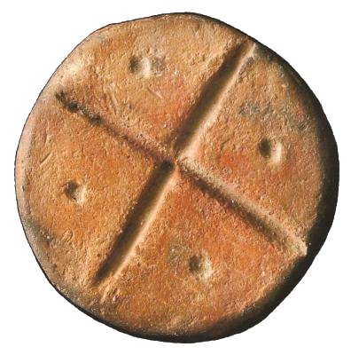
Körkereszt (köroszt), Sepsiszentgyörgy
Erények
Az elkövetkezendő zavaros időszakban az elméletek, tanok, vallások útvesztőjében egyetlen mércét érdemes használni: ez a hitelesség. Élő a tudás? Tiszta forrásból származik? Visszaigazolja a Teremtés? Kiállja az élet próbáját? Aki a boldogsághoz vezető útról beszél, boldog-e? Aki annak az Embernek nevében beszél, aki gyógyított, tanított, mintát mutatott nekünk, képes-e ezeket megcselekedni? Visszatükrözi, hitelesíti-e a saját élete?
A legnagyobb gond a kimondott szó romlása. A magyar nyelvet Isten tanításra, gyógyításra és imára teremtette. Ha nem erre használjuk, az istenkáromlás. Ha lényegtelen dolgokról órákat fecsegünk, miközben lényeges dolgokat nem merünk kimondani, elfolyik teremtőerőnk. Szánkat csak őszinte, tiszta szónak szabad elhagynia. Aki erre képtelen, hallgasson. „Ez az én szerelmes Fiam, a kiben én gyönyörködöm: őt hallgassátok.” (Mt 17,5)
Hiteltelenségünk másik oka, hogy elvesztettük az ősbizalmunkat a Teremtőnkben. Nem merünk rátámaszkodni, helyette mindenféle összefércelt, emberi tákolmányokra bízunk magunkat (munkahely, nyugdíj, kórház…). Tiszta, gyermeki bizalom híján nem lehet félelem nélküli, szabadon élni. „Aki nem úgy fogadja az Isten országát, mint gyermek, semmiképpen nem megy be abba.” (Lk 18,17)
Babaúszás. Ők még tudnak úszni?
Az ősbizalom helyreállításában, az újra gyermekké válásban sokat segítenek az egyéni és közösségi szertartások. A SZER szavunk jelentése: az égi törvény. Ez tükröződik a szerződés, szerelem szavainkban. Ha csak annyit megteszünk, hogy a nappal kelve naponta belenézünk tündöklő arcába, és megfogadjuk: ma közösen járjuk be a földi létet… Minden nap újra köthetjük szövetségünket Teremtőnkkel, naponta megélhetjük az Újszövetséget!
Minden ember fa, amely az eget köti össze a földdel. Testünk a gyökér, amely a minket éltető anyaföldbe kapaszkodik, szellemünk a korona, amely az ég felé tör. Földanyánktól kapjuk a testet, a táplálékot, a támaszt. Nap atyánk adja a tudást, a tartást, a törvényt. A törzset lelkünk adja ebbe a szövetségbe. Minden fa akkorára nő, amekkorára lelke emeli. Téged mi akadályoz abban, hogy égig érő fává nőhess?
Kelt Magfalván, az Úr 2010. évében, Új kenyér havában
Géczy Gábor
MAG